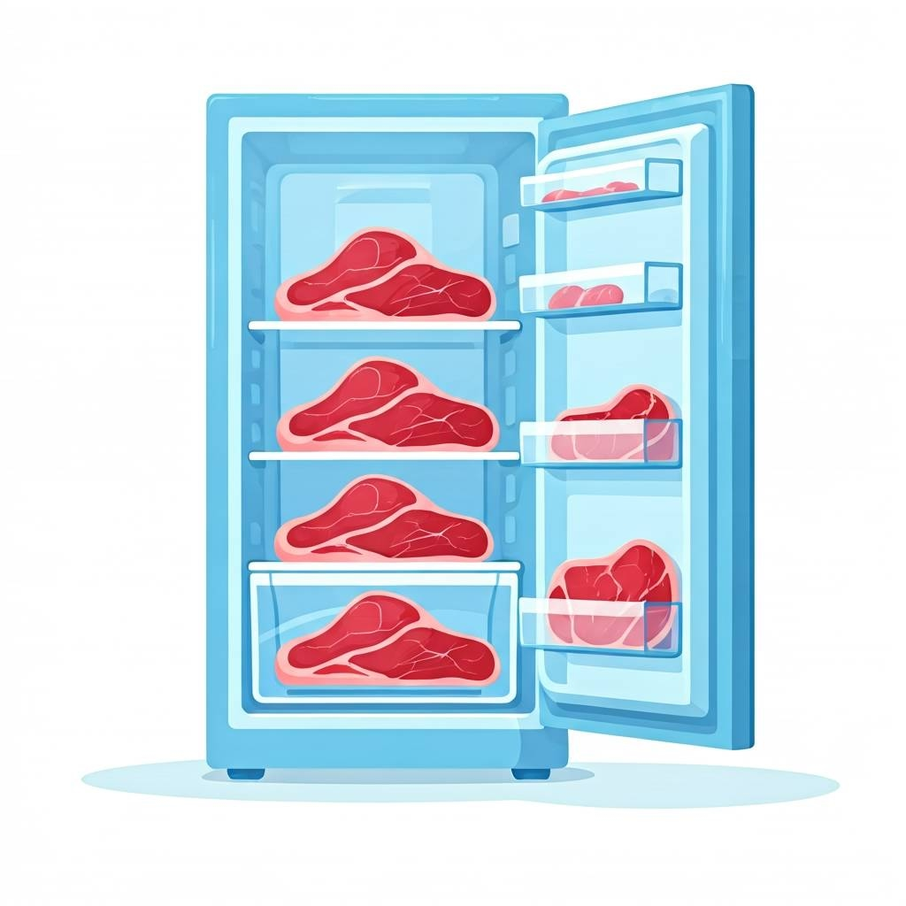
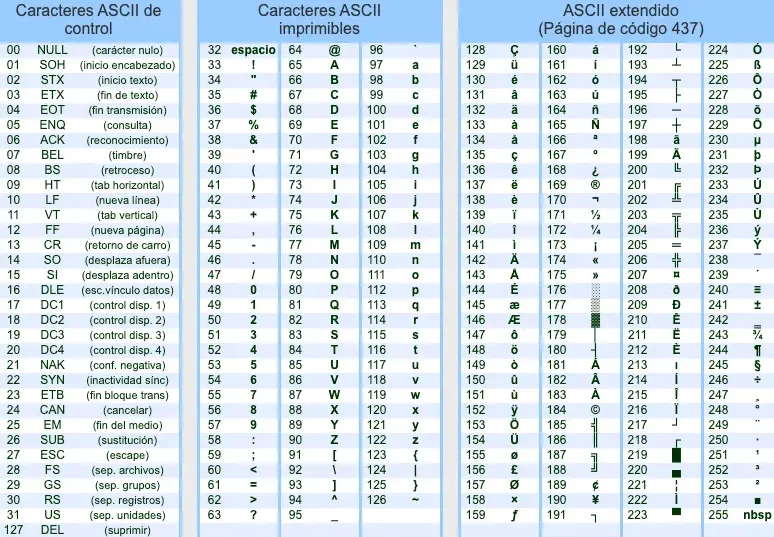
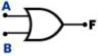

A03: Construcción documento anteproyecto¶
En esta actividad, el estudiante finalmente elabora el documento de ante-proyecto de grado. Desarrolle las siguientes tareas:
TAREA 01: Título del proyecto (las 4 preguntas de indagación)¶
A partir de la idea de proyecto de grado seleccionada, ahora debe construir el título de proyecto de grado. Desarrolle los siguientes puntos:
Transcriba el siguiente texto en su cuaderno:
¿Cómo construir un título de proyecto?
Una vez identificado el tema y la idea de proyecto, es necesario sintetizarlo en una frase. Primero se debe responder las siguientes cuatro preguntas de indagación:
¿Qué se quiere investigar? (Identificación del trabajo a realizar)
¿Cómo se realizará el proyecto? (Identificación de la Tecnología a usar)
¿Donde se realizará el proyecto? (Lugar dentro de la Institución Educativa)
¿Para qué se realizará el proyecto? (Identificar el aporte, beneficio e importancia de la ejecución de su proyecto = PROBLEMA/SOLUCIÓN )
Con las respuestas obtenidas, realizar una redacción coherente y entendible del tema de proyecto de grado. Se recomienda que el título no supere más de 30 palabras.
\[ Qué + Cómo + Dónde + Para\_qué = Título\_Proyecto \]Transcriba el siguiente ejemplo en su cuaderno:
EJEMPLO Construcción de título de proyecto
En este ejemplo, se construye un título de proyecto de grado relacionado con la siguiente idea de proyecto:
“Adecuación tecnológica en la sala de informática 115 de la IEJFK”.
Primero se responden las 4 preguntas de indagación:
¿Qué se quiere investigar? (Identificación del trabajo a realizar)
RSTA: Adecuación tecnológica
¿Cómo se realizará el proyecto? (Identificación de la Tecnología a usar)
RSTA: Software libre GNU/LINUX
¿Dónde se realizará el proyecto? (Lugar dentro de la Institución Educativa)
RSTA: Sala 115, Institución Educativa John F. Kennedy
¿Para qué se realizará el proyecto? (Identificar el aporte, beneficio e importancia de la ejecución de su proyecto = PROBLEMA/SOLUCIÓN)
RSTA: Desarrollo de actividades académicas sin interrupciones o problemas técnicos.
Con las respuestas a las 4 preguntas de indagación, ahora se puede construir el título del proyecto de grado. En este caso, este sería el título:
“Adecuación tecnológica usando software libre en la Sala de Informática 115 de la IEJFK para el desarrollo eficiente de actividades académicas”.
Acorde a su idea de proyecto, en su cuaderno responda las 4 preguntas de indagación:
¿Qué se quiere investigar? (Identificación del trabajo a realizar)
¿Cómo se realizará el proyecto? (Identificación de la Tecnología a usar)
¿Dónde se realizará el proyecto? (Lugar dentro de la Institución Educativa)
¿Para qué se realizará el proyecto? (Identificar el aporte, beneficio e importancia de la ejecución de su proyecto = PROBLEMA/SOLUCIÓN)
Con las respuestas a las 4 preguntas de indagación, en su cuaderno construya el título de su proyecto de grado.
TAREA 02: Planteamiento del problema¶
Con la respuesta a la pregunta: ¿Para qué se realizará el trabajo?, se construye el planteamiento del problema. Desarrolle los siguientes puntos:
Transcriba el siguiente texto en su cuaderno:
¿Qué es un planteamiento del problema?
Un planteamiento del problema, es una descripción concisa y clara de un problema o desafío que necesita ser abordado. Sirve como una hoja de ruta para la resolución de problemas y la toma de decisiones, ayudando a individuos y equipos a definir el alcance de su trabajo y centrarse en los aspectos más críticos del proyecto.
El planteamiento del problema se construye con la respuesta a la pregunta: ¿Para qué se realizará el proyecto?.
Lea el siguiente ejemplo:
EJEMPLO Construcción del planteamiento del problema
Volviendo al ejemplo de proyecto de la sala 115, teniendo en cuenta que la respuesta a la pregunta: ¿Para qué se realizará el proyecto?, es la siguiente:
“Desarrollo de actividades académicas sin interrupciones o problemas técnicos”.
Es necesario analizar cómo las interrupciones o los problemas técnicos impactan a los estudiantes y el docente al momento de realizar una clase de informática. Por tanto el planteamiento del problema sería el siguiente:
“La sala de Informática 115 de la IEJFK tiene problemas de rendimiento en sus equipos de cómputo. Esto ha ocurrido en todo el año 2024. Esto genera lentitud, torpeza, malestar y dificultad al momento de realizar prácticas académicas relacionadas con ofimática, programación, lógica computacional y tecnología e informática. El uso de sistemas operativos actuales como Windows 10 u 11 requieren de equipos con hardware actualizado y mayores recursos computacionales, lo cual la Institución Educativa de momento no puede costear. Igualmente, las licencias de software suelen ser demasiado costosas. El uso de sistemas operativos obsoletos como Windows 7, 8 y 8.1 dejarían las máquinas expuestas a cualquier malware. El uso de software pirata recaería en acciones legales contra la Institución. Los equipos de cómputo ya culminaron su vida útil”.
RECUERDE QUE EN EL PLANTEAMIENTO DEL PROBLEMA NO SE DESCRIBEN SOLUCIONES.
Acorde a su respuesta a la pregunta: ¿Para qué se realizará el proyecto?, escriba el planteamiento del problema de su proyecto en su cuaderno. Tenga en cuenta lo siguiente:
Mínimo una hoja.
Sin espacio entre líneas.
Tamaño de letra mediana.
TAREA 03: Justificación¶
Con la respuesta a la pregunta: ¿Para qué se realizará el trabajo?, también se construye la justificación. Desarrolle los siguientes puntos:
Transcriba el siguiente texto en su cuaderno:
¿Qué es una justificación?
La justificación en un proyecto es la sección donde se exponen las razones que motivan y dan valor al estudio. Se explica la importancia del tema, su relevancia teórica y práctica, y se argumenta por qué el tema es relevante, qué beneficios aportará, y a quiénes beneficiará.
La justificación también se construye con la respuesta a la pregunta: ¿Para qué se realizará el proyecto?.
Lea el siguiente ejemplo:
EJEMPLO Construcción de la justificación
Volviendo al ejemplo de proyecto de la sala 115, teniendo en cuenta que la respuesta a la pregunta: ¿Para qué se realizará el proyecto?, es la siguiente:
“Desarrollo de actividades académicas sin interrupciones o problemas técnicos”.
Es necesario analizar los beneficios que tiene el desarrollo de una clase sin interrupciones por problemas técnicos. Entonces la justificación para este ejemplo sería la siguiente:
El desarrollo de este proyecto permitiría que los estudiantes generen una autonomía en sus aprendizajes sin depender totalmente del docente al momento de obtener aprendizajes. Este trabajo dá a conocer la importancia y las ventajas que se tiene al usar software de código abierto en el desarrollo de clases de informática, programación, lógica computacional y ofimática especialmente en escenarios donde se tienen equipos de bajos recursos con procesadores de dos nucleos y 2 GB de RAM”.
RECUERDE QUE EN LA JUSTIFICACIÓN NO SE DESCRIBEN PROBLEMAS.
Acorde a su respuesta a la pregunta: ¿Para qué se realizará el proyecto?, escriba la justificación de su proyecto en su cuaderno. Tenga en cuenta lo siguiente:
Mínimo 3/4 de hoja.
Sin espacio entre líneas.
Tamaño de letra mediana.
TAREA 04: Objetivos¶
Con el Título de proyecto de grado, se crea el Objetivo general.
Con el Objetivo general, se crean los objetivos específicos.
Desarrolle los siguientes puntos:
Transcriba el siguiente texto en su cuaderno:
¿Qué son los objetivos?
En un proyecto, se crea UN SOLO OBJETIVO GENERAL y varios OBJETIVOS ESPECÍFICOS.
Un OBJETIVO GENERAL describe la meta a alcanzar con el proyecto de investigación. El objetivo general se crea a partir del título del proyecto de grado. El objetivo general se refiere al propósito que se quiere alcanzar.
Los OBJETIVOS ESPECÍFICOS se refieren a cómo se va a alcanzar ese propósito. Los objetivos específicos se crean a partir del objetivo general.
Tanto los objetivos generales como los objetivos específicos empiezan con un verbo en infinitivo. La siguiente tabla muestra unos ejemplos de los verbos para usar cuando se construye un objetivo general, y también tiene unos ejemplos de verbos para usar cuando se construyen unos objetivos específicos:
Verbos Objetivo General
Verbos Objetivos Específicos
Mejorar
Reducir
Innovar
Simplificar
Actualizar
Minimizar
MaximizarDiseñar
Construir
Crear
Expandir
Planificar
Implementar
Optimizar
Conseguir
Elaborar
DesarrollarLea el siguiente ejemplo:
EJEMPLO Construcción de los objetivos
A partir del título del proyecto de grado:
“Adecuación tecnológica usando software libre en la Sala de Informática 115 de la IEJFK para el desarrollo eficiente de actividades académicas”.
Se construye el siguiente objetivo general:
OBJETIVO GENERAL
“Adecuar tecnológicamente usando software libre la sala de informática 115 de la IEJFK para el desarrollo eficiente de actividades académicas”.
A partir del objetivo general y analizando las actividades por hacer para lograrlo, se crean mínimo cinco objetivos específicos. Estos son:
OBJETIVOS ESPECÍFICOS
“Organizar el inmobiliario de la sala de informática 115 para aprovechar el espacio disponible de forma óptima”.
“Implementar un sistema operativo liviano de código abierto que permita que funcionen los equipos portátiles establemente sin bloqueos o interrupciones de sistema”.
“Configurar una red local de tal forma que la conexión a Internet o Intranet no presente problemas”.
“Implementar un sistema de monitoreo y acceso remoto de equipos para ayudar al estudiante en sus dudas más fácilmente”.
“Implementar un portal web básico para que los estudiantes accedan a guías y demás recursos digitales y así minimizar el uso de papel aportando al cuidado del medio ambiente”.
Acorde al Título de su proyecto, escriba el objetivo general y los objetivos específicos de su proyecto en su cuaderno. Tenga en cuenta lo siguiente:
Mínimo una hoja.
Sin espacio entre líneas.
Tamaño de letra mediana.
TAREA 05: Pregunta problematizadora¶
Con el Título de proyecto de grado, se crea la Pregunta problematizadora. Desarrolle los siguientes puntos:
Transcriba en su cuaderno el siguiente texto:
¿Qué es la pregunta problematizadora?
La pregunta problematizadora permite establecer claramente el problema a resolver, mantenerlo enfocado y con un propósito. Es la base sobre la cual se construye todo el proyecto. Por lo tanto, es mportante aprender a redactarla adecuadamente.
Lea el siguiente ejemplo:
EJEMPLO Construcción de la pregunta problematizadora
A partir del título del proyecto de grado:
“Adecuación tecnológica usando software libre en la Sala de Informática 115 de la IEJFK para el desarrollo eficiente de actividades académicas”.
Se construye la siguiente pregunta problematizadora:
“¿Usando herramientas de software libre en la sala 115, será posible adecuar un espacio tecnológico que permita a estudiantes y profesores estudiar de forma eficiente?”.
Acorde al Título de su proyecto, escriba la pregunta problematizadora de su proyecto en su cuaderno. Tenga en cuenta lo siguiente:
Mínimo 1/4 de hoja.
Sin espacio entre líneas.
Tamaño de letra mediana.
TAREA 06: Marco teórico¶
En su cuaderno transcriba el siguiente texto:
¿Qué es el marco teórico?
Un marco teórico esta compuesto por:
Marco conceptual: Es la representación explicativa de los conceptos clave y las relaciones entre ellos que se utilizan en una investigación.
Marco de antecedentes: Representa y analiza las investigaciones previas relacionadas con el tema que se está estudiando.
Marco legal: Proporciona un contexto jurídico que regula diversas actividades y relaciones en la sociedad, asegurando que se respeten los derechos y deberes de los ciudadanos. Todo ello relacionado con el proyecto de investigación.
Identifique y recuerde los contenidos que desarrolló en la plantilla: ESQUEMA MARCO TEÓRICO y con esa información construir más adelante el marco teórico de su documento del proyecto.
TAREA 07: Aspectos metodológicos¶
Los aspectos metodológicos es la planeación del desarrollo del proyecto. Es el paso a paso que usted seguirá para desarrollar el proyecto. Desarrolle los siguientes puntos:
Transcriba el siguiente texto en su cuaderno:
¿Qué son los aspectos metodológicos?
Los aspectos metodológicos se refiere al “cómo” se llevará a cabo la investigación. Incluyen la descripción detallada de los métodos, técnicas y herramientas que se utilizarán para recopilar, analizar e interpretar los datos. En resumen, los aspectos metodológicos son la “hoja de ruta” que guía el estudio, asegurando que la investigación sea rigurosa, válida y confiable. Los aspectos metodológicos se componen de las siguientes secciones:
FASES DEL PROYECTO: Describe cada una de las fases que tendrá el proyecto para ser ejecutadas de forma serial o en algunos casos, de forma paralela. Cada fase debe especificar su tiempo de ejecución. Cada fase debe tener una descripción que especifique en detalle las tareas a realizar. Las tareas deben estar relacionadas con los objetivos específicos. Las dos últimas fases deben tratar el análisis de resultados y la creación del documento del proyecto.
CRONOGRAMA DE ACTIVIDADES: Con las fases del proyecto, se crea el cronograma de actividades. Es una tabla que especifica las fechas en las que el proyecto de grado será desarrollado.
TÉCNICAS e INSTRUMENTOS: En este elemento se describe el inventario o elementos necesarios para desarrollar el proyecto. Cada elemento debe tener una descripción con sus características y el cómo se usaría en cada fase del proyecto.
POBLACIÓN: En esta sección se hace una descripción del personal humano que de alguna forma participa en la ejecución del proyecto.
Lea el siguiente ejemplo:
EJEMPLO construcción de los aspectos metodológicos
Fases del proyecto
FASE 01: Organización de espacios en la sala 115. DURACIÓN: 1 mes
FASE 02: Selección del sistema operativo LINUX. DURACIÓN: 3 meses
FASE 03: Configuración de red de área local. DURACIÓN: 1 mes
FASE 04: Pruebas en sistema de monitoreo y acceso remoto. DURACIÓN: 2 meses
FASE 05: Implementación del portal web. DURACIÓN: 1 mes
FASE 06: Análisis de resultados. DURACIÓN: 10 meses
FASE 07: Creación del documento de proyecto de grado. DURACIÓN: 1 mes
Cronograma de actividades

Cronograma de actividades¶
Técnicas e instrumentos
10 portátiles marca HP.
6 portátiles y 4 equipos de escritorio marca LENOVO.
1 switch de 24 puertos TCP/IP.
1 SMART TV marca CAIXUN.
10 mesas dobles.
2 mesas simples.
1 escritorio.
33 sillas.
Software VEYON, XAMPP y OS LINUX FEDORA.
Población 👫
“Este proyecto se desarrolla en la Institución Educativa John F. Kennedy ubicada en el municipio de Puerto Boyacá (Boyacá) en el barrio centro con dirección carrera 3A N° 7-01. Los estudiantes en su mayoría provienen de barrios como Pueblo Nuevo, Chambacú, el Palmar, Brisas de magdalena, el Progreso y el Barrio 10 de enero. Dentro del grupo poblacional se encuentran estudiantes indígenas, afrodescendientes, y estudiantes con necesidades educativas especiales”.
En su cuaderno escriba los aspectos metodológicos de su proyecto. Tenga en cuenta lo siguiente:
Describa las fases de su proyecto. Tenga en cuenta que cada fase tiene una descripción y un tiempo límite para desarrollarse.
Con las fases de su proyecto, describa el cronograma de actividades de su proyecto. Tenga en cuenta que rango de las fechas debe coincidir con los tiempos establecidos.
Con las fases de su proyecto, describa las técnicas e instrumentos de su proyecto. Tenga en cuenta que cada elemento del inventario, debe tener una descripción del por qué y el cómo se usará en la ejecución de cada fase del proyecto.
Finalmente describa la población de su proyecto. Se debe especificar de que forma dicha población participa en el desarrollo de su proyecto.
{kind=link}
TAREA 08: REFERENCIAS¶
Las referencias son las fuentes de información que el estudiante consultó para poder hacer su proyecto. Desarrolle los siguientes puntos:
Transcriba el siguiente texto:
¿Qué son las referencias?
Las referencias en un proyecto de grado son una lista detallada de todas las fuentes (libros, artículos, páginas web, etc.) que el autor ha consultado y utilizado para sustentar su investigación. Funcionan como un reconocimiento a las ideas y trabajos de otros, y permiten a los lectores verificar y profundizar en la información presentada. Son esenciales para:
Evitar el plagio.
Dar credibilidad al trabajo.
Facilitar la investigación de otros interesados en el tema.
En resumen, las referencias son la “bibliografía” que respalda y contextualiza el proyecto de grado.
Lea el siguiente ejemplo:
EJEMPLO construcción de las referencias (TUTORIAL)
Para la construcción de las referencias del proyecto, inicialmente se deben tener algún enlace de consulta. Por ejemplo se tiene el siguiente enlace:
https://economipedia.com/definiciones/mantenimiento.html
Para referenciar este enlace (cumpliendo las normas APA), se hace uso de la siguiente herramienta en línea: BIBGURU

App Web BIBGURU¶
Es necesario seleccionar el estilo en la opción: APA - 7th edition. Posteriormente se debe copiar y pegar el enlace en el cuadro donde dice:
Paste URL of the website you want to cite
Posteriormente aparecerá una ventana donde muestra si desea crear la referencia y dar clic en + Add.

Entonces se creará la siguiente referencia:Westreicher, G. (2020, December 14). Mantenimiento: qué es y por qué es importante para la empresa. Economipedia. https://economipedia.com/definiciones/mantenimiento.html
Identifique y recuerde los contenidos (marco de antecedentes) que desarrolló en la plantilla: ESQUEMA_MARCO_TEORICO y tenga presente dicha información para aplicar mas adelante en la construcción de las referencias del documento de su proyecto de grado.
{kind=link}
{kind=link}
TAREA 09: EVALUACIÓN¶
Construcción del documento del ante-proyecto
En esta tarea, el estudiante es evaluado con los temas vistos en la presente actividad. Desarrolle los siguientes puntos:
Descargue los siguientes archivos:
Con los apuntes desarrollados en su cuaderno, diligencie la Plantilla_ANTEPROYECTO.odt.
Si tiene dudas, consultar el proyecto de ejemplo: ANTEPROYECTO_EJEMPLO_SALA115.pdf.
Enviar la plantilla desarrollada al correo electrónico:
Asunto: Documento proyecto de grado